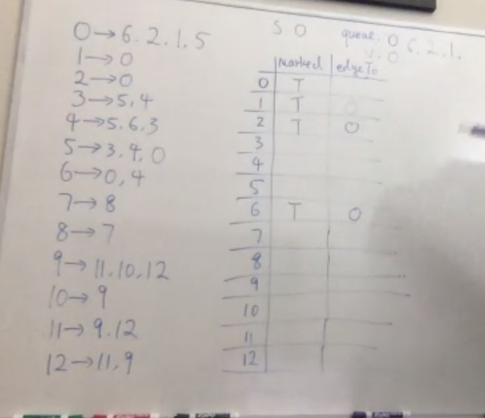
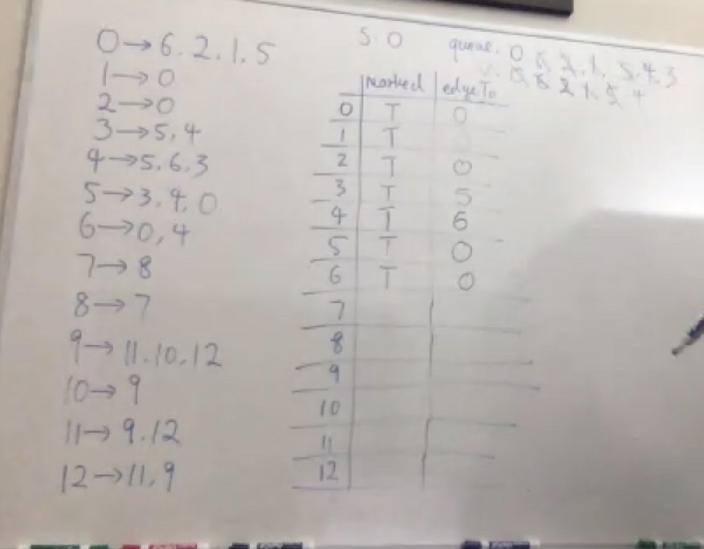
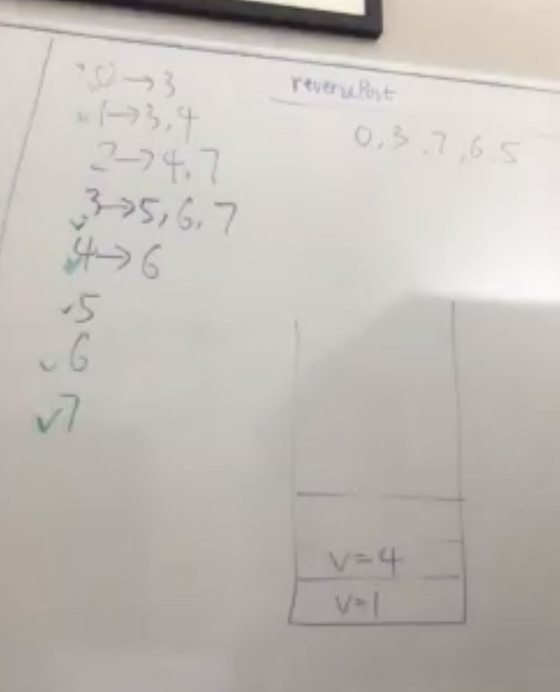

Exercise solns
Graph cont.
Gets shortest path because it starts by searching all edges that are 1 away, then 2 away, and so forth.
Tracing the BFS implementation
Enter the loop



Path tree on right ^
Performance:
- Worst case runtime is O(E) or O(V+E)
- Worst case space complexity O(V), when every vertice is added to the queue
- There is a maximum of
V(V−1) vertices in a digraph with no parallel or self-loops. "Each edge can connect to every other edge." - The minimum number of edges is
V−1 .

- The indegree for 6 is 2
- The outdegree for 6 is 1
Space complexity of reverse is O(V+E). Runtime complexity is O(V+E).
What vertices are reachable from
- Source 1: 1
- Source 2: 0, 1, 2, 3, 4, 5
- Source 1,2,6: All except 7 and 8
Directing cycle
This would be impossible to take any courses. There cannot be any directed cycles in the digraph, it would be impossible to find the topological order. (This is a DAG).
Topological sort with DFS trace
Vertexes in different color have been visited
0, 3, 7, 6, 5 are reachable from 0. Now go by vertex order and check 1

Now check 2
Everything has been visited now. Our reversePost is finished. All edges flow from left to right.
The runtime for the constructor is O(V+E). Space complexity for the constructor is O(V).
0: 61: 112: 0, 33: 6, 104: 15: 2, 106: 27: 8, 118: 1, 49:10: 311: 8